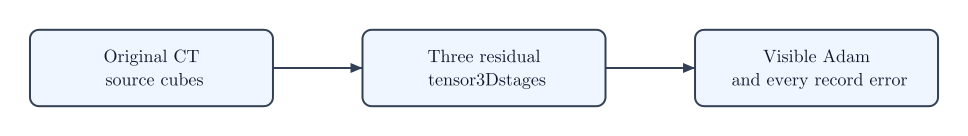
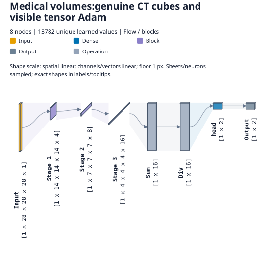
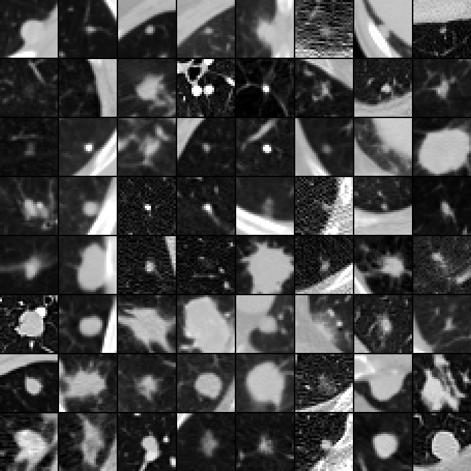
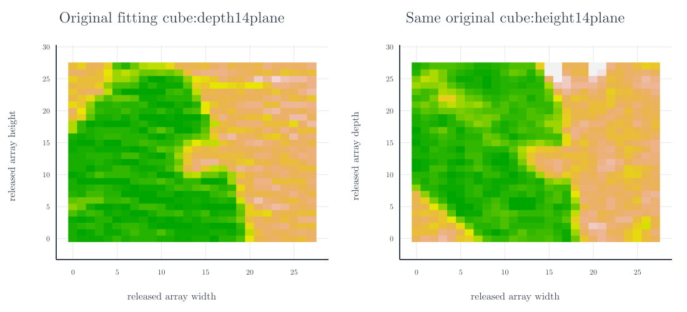
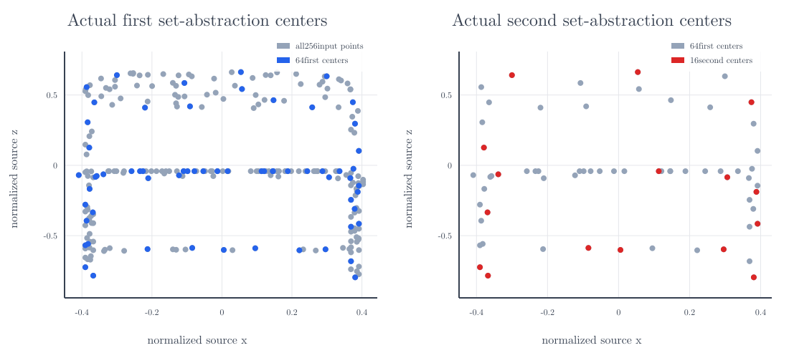
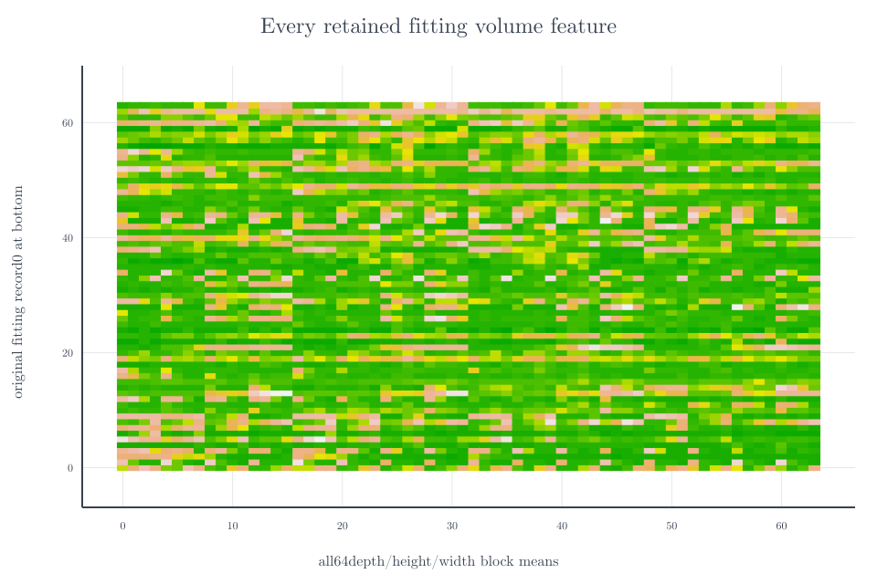
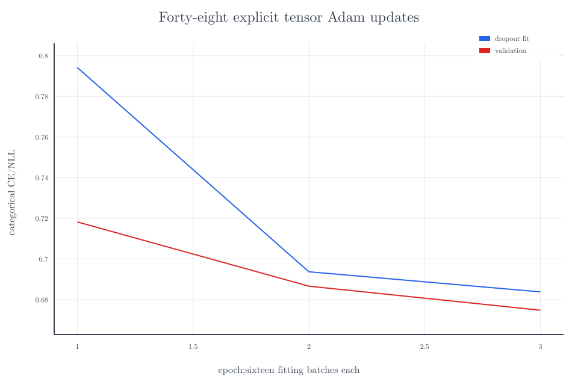
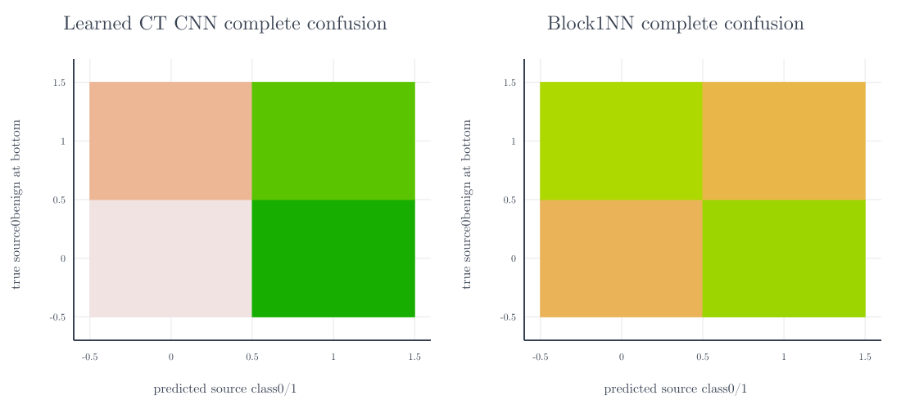
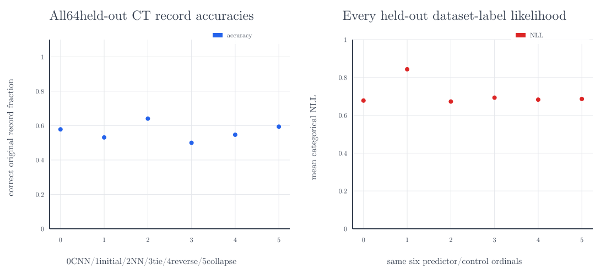
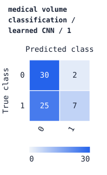

Medical volumes:genuine CT cubes and visible tensor Adam
Abstract
Original NoduleMNIST3D cubes feed a complete custom three-stage residual CNN. Explicit fitting-only normalization,all48Adam updates,volumetric previews and every held-out record expose the limited dataset-label result.
Source example: examples/cpp/source/nn/1_convolutional_neural_networks/1.10_3d_and_video_convolutions/medical_volume_classification.cpp.
The method
Preserve official released-array boundaries and original byte intensities,compute fitting-only moments with tensors,and show the full residual3Doptimizer loop. Restore20learned tensors and two moments for intensity-only inference,then compare every held-out record and depth control with a fixed memory reference.
The concept diagram below is drawn by dm::graphics::Diagram. Its editable C++
source is the complete block below; regeneration uses the same datamunge toolchain
as the numerical examples. Exports consume the saved local SVG.
#include <dm/dm.hpp>
int main() {
std::filesystem::create_directories("build");
dm::graphics::Diagram diagram;
diagram.node("n0", {0.0, 0}, "Original CT\n source cubes");
diagram.node("n1", {5.2, 0}, "Three residual\n tensor3Dstages");
diagram.node("n2", {10.4, 0}, "Visible Adam\n and every record error");
diagram.edge("n0", "n1").edge("n1", "n2");
diagram.save_svg("build/medical_volume_classification_concept.svg");
}
Executed tensor architecture
This figure executes the inference configuration shown in the code, using a zero-valued shape probe without fitting or loading a checkpoint. Named stage boundaries group whole subgraphs where available; other nodes retain functional-layer detail. Exact batch-inclusive shapes and reachable parameter totals come from the trace. Shared linear scales map spatial dimensions and channel counts to blocks; the one-pixel visibility floor is disclosed in the legend. Labels use compact monospace text, rotate counterclockwise and sit beside their own glyphs. Arrows flow left to right; wide diagrams scroll at native size on the website.
#include <dm/dm.hpp>
int main() {
namespace n = dm::nn;
namespace m = n::models;
n::set_num_threads(2);
std::filesystem::create_directories("build");
n::ParameterStore p(1049), state(1051);
n::Generator dropout(1031);
n::Module architecture_model(
[&](const n::Tensor& image) {
const auto out = m::MedicalVolume(p, state, image);
auto previous = image;
for (std::size_t i = 0; i < out.stages.size(); ++i) {
n::model_stage("Stage " + std::to_string(i + 1), previous, out.stages[i]);
previous = out.stages[i];
}
return out.logits;
},
"Medical volumes:genuine CT cubes and visible tensor Adam");
n::ModelPlotOptions options;
options.style = n::ModelPlotStyle::Flow;
options.detail = n::ModelPlotDetail::Blocks;
options.labels = {.type = n::ModelPlotLabel::NameAndShape, .size = 12, .wrap = 24};
options.spacing = {.layer = 24, .lane = 12, .label = 8, .margin = 20};
options.sizing.spatial_size = 96;
options.sizing.channel_size = 42;
options.sizing.minimum_extent = 1;
options.opacity = .8;
const auto diagram = architecture_model.plot(n::zeros({1, 28, 28, 28, 1}), options);
diagram.save_svg("build/medical_volume_classification_architecture.svg");
std::print(
"{} displayed nodes; {} reachable learned values.\n",
diagram.nodes().size(),
diagram.parameter_count());
}8 displayed nodes; 13782 reachable learned values.

Genuine released CT cubes and official array boundaries
Use corrected NoduleMNIST3D v2.1,29299364bytes,SHA256 5dc6f82bdb2b91f300263522aab82f7c034d0b264692f6d5f4c70179ad27f76b, MD58755a7e9e05a4d9ce80a24c3e7a256f3. Released28x28x28uint8cubes derive from LIDC-IDRI lung nodules. The dataset calls source0benign(ratings1/2), source1malignant(ratings4/5),and excludes rating3. These are released dataset labels,not diagnoses made or validated by this teaching model.
Retain the first32fit/8validation/32test distinct records per class in source row order:64/16/64balanced cubes. Official array sizes1158/165/310 give exact source-ID offsets0/1158/1323;selected IDs remain disjoint. Skip byte-identical selected cubes across all pools. Original archive bytes and every selected source row remain available. Patient independence cannot be verified from these released row IDs. This small subset is not clinical validation or a full benchmark.
#include <dm/dm.hpp>
int main() {
const std::filesystem::path cache = dm::datasets::data_home();
dm::datasets::prepare_example_data("medical", (cache / "medical_volume").string());
}The tensor loader scales original bytes to Float32/255. Below every held-out cube contributes its depth14slice,one original record per tile. Volumetric orthogonal views of the first fitting record follow separately.
#include <dm/dm.hpp>
int main() {
namespace n = dm::nn;
namespace m = n::models;
n::set_num_threads(2);
std::filesystem::path cache;
if (const auto *p = std::getenv("DATAMUNGE_DATA_DIR"))
cache = p;
else if (const auto *p = std::getenv("XDG_CACHE_HOME"))
cache = std::filesystem::path(p) / "datamunge/datasets";
else
cache = std::filesystem::path(std::getenv("HOME")) / ".cache/datamunge/datasets";
std::filesystem::path root = cache / "medical_volume";
if (const auto *p = std::getenv("DATAMUNGE_MEDICAL_DIR"))
root = p;
else
dm::datasets::prepare_example_data("medical", root.string());
const auto pools = m::LoadMedical(root);
const auto &fit = pools[0];
const auto &validation = pools[1];
const auto &test = pools[2];
std::print("| pool | original cubes | source0/source1 counts |\n|---|---:|---|\n");
for (int i = 0; i < 3; ++i)
std::print("| {} | {} | {} |\n",
i == 0 ? "fit"
: i == 1 ? "validation"
: "test",
pools[i].size(), n::sum(n::one_hot(pools[i].labels, 2), {0}));
std::print("Gallery row-major source IDs {};labels {}.\n", test.source, test.labels);
n::save_image_grid(n::select(test.voxels, 1, 14),
"build/medical_volume_classification_data.png", 8, 0, 1, 2, 0, 3);
}| pool | original cubes | source0/source1 counts |
|---|---|---|
| fit | 64 | float32[2] [32, 32] |
| validation | 16 | float32[2] [8, 8] |
| test | 64 | float32[2] [32, 32] |
Gallery row-major source IDs int32[64] [1323, 1324, 1325, 1326, 1327, 1328, 1329, 1330, 1331, 1332, 1333, 1334, 1335, 1336, 1337, 1338, 1339, 1340, 1341, 1342, 1343, 1344, 1345, 1346, 1347, 1348, 1349, 1350, 1351, 1352, 1353, 1354, 1355, 1356, 1357, 1363, 1364, 1373, 1384, 1385, 1388, 1398, 1399, 1407, 1416, 1424, 1425, 1427, 1428, 1431, 1435, 1456, 1457, 1462, 1464, 1466, 1467, 1470, 1472, 1473, 1476, 1482, 1486, 1492];labels int32[64] [0, 0, 0, 0, 0, 0, 0, 1, 0, 0, 1, 0, 0, 0, 0, 0, 0, 0, 0, 0, 0, 0, 0, 1, 0, 0, 0, 0, 0, 0, 0, 0, 0, 0, 0, 1, 1, 1, 1, 1, 1, 1, 1, 1, 1, 1, 1, 1, 1, 1, 1, 1, 1, 1, 1, 1, 1, 1, 1, 1, 1, 1, 1, 1].

Fit-only intensity moments and actual orthogonal volume views
Compute Double population mean/std over all fitting voxels,then store those two scalars as Float32. Validation/test never estimate normalization. The scalar state is separate from20learned tensors and is checkpointed with them;no population fitting is hidden in forward. Original byte intensities and standardized intensities are different display scales,clearly labeled. Show depth14and height14planes from the first original fitting cube.
#include <dm/dm.hpp>
int main() {
namespace n = dm::nn;
namespace m = n::models;
n::set_num_threads(2);
std::filesystem::path cache;
if (const auto *p = std::getenv("DATAMUNGE_DATA_DIR"))
cache = p;
else if (const auto *p = std::getenv("XDG_CACHE_HOME"))
cache = std::filesystem::path(p) / "datamunge/datasets";
else
cache = std::filesystem::path(std::getenv("HOME")) / ".cache/datamunge/datasets";
std::filesystem::path root = cache / "medical_volume";
if (const auto *p = std::getenv("DATAMUNGE_MEDICAL_DIR"))
root = p;
else
dm::datasets::prepare_example_data("medical", root.string());
const auto pools = m::LoadMedical(root);
const auto &fit = pools[0];
const auto &validation = pools[1];
const auto &test = pools[2];
const auto fitting = fit.voxels.to(n::DType::Float64);
const auto mean = n::mean(fitting).to(n::DType::Float32);
const auto stddev = n::sqrt(n::variance(fitting)).to(n::DType::Float32);
n::save_npz("build/medical_volume_classification_moments.npz",
{{"normalization/mean", mean}, {"normalization/stddev", stddev}});
const auto volume = n::select(n::select(fit.voxels, 0, 0), 3, 0);
const auto axial = n::select(volume, 0, 14);
const auto coronal = n::select(volume, 1, 14);
std::print("Fitting-only Float32 mean {},stddev {},all{}fitting voxels;source ID{}.\n", mean,
stddev, fitting.numel(), n::select(fit.source, 0, 0));
auto a = n::plot_tensor_map(axial, 0, 1), b = n::plot_tensor_map(coronal, 0, 1);
a.title("Original fitting cube:depth14plane")
.x_label("released array width")
.y_label("released array height");
b.title("Same original cube:height14plane")
.x_label("released array width")
.y_label("released array depth");
auto layout = dm::graphics::RLayout::create(1, 2);
layout.add(a).add(b).size(1100, 500).fit_panels().save_svg(
"build/medical_volume_classification_views.svg");
}Fitting-only Float32 mean float32[] 0.281274,stddev float32[] 0.272635,all1404928fitting voxels;source IDint32[] 0.

Complete custom residual3Dgraph and every stage
This source model is a custom teaching CNN,not a named published medical architecture. Three stages use widths4/8/16. Each has a3x3x3stride2/ReLU, a3x3x3linear convolution,and a1x1x1stride2projection before summed ReLU. SAME borders preserve28->14->7->4. He-uniform kernels and zero biases, globalD/H/Waverage,headkeep.8dropout and Glorot linear2class head give 13782learned values/20tensors plus two fitting-normalization scalars. No BN. Native odd/even fixtures independently check all646kernel/projection/bias/ input derivatives. Below actual initialized source-cube stages remain visible.
#include <dm/dm.hpp>
int main() {
namespace n = dm::nn;
namespace m = n::models;
n::set_num_threads(2);
std::filesystem::path cache;
if (const auto *p = std::getenv("DATAMUNGE_DATA_DIR"))
cache = p;
else if (const auto *p = std::getenv("XDG_CACHE_HOME"))
cache = std::filesystem::path(p) / "datamunge/datasets";
else
cache = std::filesystem::path(std::getenv("HOME")) / ".cache/datamunge/datasets";
std::filesystem::path root = cache / "medical_volume";
if (const auto *p = std::getenv("DATAMUNGE_MEDICAL_DIR"))
root = p;
else
dm::datasets::prepare_example_data("medical", root.string());
const auto pools = m::LoadMedical(root);
const auto &fit = pools[0];
const auto &validation = pools[1];
const auto &test = pools[2];
n::ParameterStore p(1049), state(1051);
n::Generator dropout(1031);
{
n::NoGradGuard guard;
m::MedicalVolume(p, state, n::zeros({1, 28, 28, 28, 1}));
}
auto predict = [&](const n::Tensor &voxels) {
n::NoGradGuard guard;
std::vector<n::Tensor> parts;
for (std::int64_t start = 0; start < voxels.size(0); start += 4)
parts.push_back(
m::MedicalVolume(p, state,
n::slice_axis(voxels, 0, start,
std::min<std::int64_t>(start + 4, voxels.size(0))))
.logits);
return n::concat(parts, 0);
};
for (const auto &[key, value] :
n::load_npz("build/medical_volume_classification_moments.npz"))
state.set(key, value);
const auto out = m::MedicalVolume(p, state, n::slice_axis(fit.voxels, 0, 0, 1));
std::print(
"{}learned values/{}leaves+{}normalization scalars;input {},global {},head {};stages",
p.count(), p.size(), state.count(), out.normalized.shape(), out.global.shape(),
out.logits.shape());
for (const auto &stage : out.stages)
std::print(" {}", stage.shape());
std::print("\n");
const auto normalized = n::select(n::select(n::select(out.normalized, 0, 0), 0, 14), 2, 0);
const auto feature = n::mean(n::select(n::select(out.stages[0], 0, 0), 0, 7), {2});
auto a = n::plot_tensor_map(normalized, n::min(normalized).item(),
n::max(normalized).item()),
b = n::plot_tensor_map(feature, 0, n::max(feature).item());
a.title("Actual fitting-normalized input slice")
.x_label("released width")
.y_label("released height");
b.title("Initialized first residual stage mean")
.x_label("stage width")
.y_label("stage height;depth7");
auto layout = dm::graphics::RLayout::create(1, 2);
layout.add(a).add(b).size(1100, 500).fit_panels().save_svg(
"build/medical_volume_classification_features.svg");
}13782learned values/20leaves+2normalization scalars;input [1, 28, 28, 28, 1],global [1, 16],head [1, 2];stages [1, 14, 14, 14, 4] [1, 7, 7, 7, 8] [1, 4, 4, 4, 16]

Parameter-free volumetric intensity memory reference
Split each original28cube into4x4x4blocks of7cubed voxels. Preserve source Float32 division by343before Double block summation. These64block means feed squared-distance1NN over the64fitting records,first fitting row winning equal distances. No learned model leaves,optimizer or held-out population statistics enter this retained-memory reference. Native tests independently check every fitting feature and held-out score against literal source host code.
#include <dm/dm.hpp>
int main() {
namespace n = dm::nn;
namespace m = n::models;
n::set_num_threads(2);
std::filesystem::path cache;
if (const auto *p = std::getenv("DATAMUNGE_DATA_DIR"))
cache = p;
else if (const auto *p = std::getenv("XDG_CACHE_HOME"))
cache = std::filesystem::path(p) / "datamunge/datasets";
else
cache = std::filesystem::path(std::getenv("HOME")) / ".cache/datamunge/datasets";
std::filesystem::path root = cache / "medical_volume";
if (const auto *p = std::getenv("DATAMUNGE_MEDICAL_DIR"))
root = p;
else
dm::datasets::prepare_example_data("medical", root.string());
const auto pools = m::LoadMedical(root);
const auto &fit = pools[0];
const auto &validation = pools[1];
const auto &test = pools[2];
const auto features = m::MedicalFeatures(fit.voxels);
const auto z = m::MedicalBaseline(fit, test);
const auto score = m::ScoreSensor(z, test.labels, 2);
std::print("Parameter-free64feature1NN:accuracy {:.6f},macroF1 {:.6f},NLL {:.6f},all "
"recalls {},complete confusion {}.\n",
score.accuracy, score.macro_f1, score.nll, n::from_vector(score.recall),
n::from_vector(score.confusion, {2, 2}));
auto plot = n::plot_tensor_map(n::reverse(features, {0}), 0, n::max(features).item());
plot.title("Every retained fitting volume feature")
.x_label("all64depth/height/width block means")
.y_label("original fitting record0 at bottom");
plot.save_svg("build/medical_volume_classification_reference.svg");
}Parameter-free64feature1NN:accuracy 0.640625,macroF1 0.640537,NLL 0.672637,all recalls float64[2] [0.65625, 0.625],complete confusion int32[2, 2] [[21, 11], [12, 20]].

All48tensor Adam updates and fixed source dropout
Warm20learned leaves and the two separate moment scalars. Set fitting-only moments before inference/training,then create tensor Adam(.001). Seeds1049/ 1051,dropout1031,batch-order1061,batch4,three epochs over64cubes give48updates. An explicit first-four-cube dropout gradient probe advances the same RNG before training and checks every learned tensor. Every minibatch shows the entire forward,CE,gradient and Adam step. Validation NLL selects the paired checkpoint;normalization scalars remain constant throughout fitting.
#include <dm/dm.hpp>
int main() {
namespace n = dm::nn;
namespace m = n::models;
n::set_num_threads(2);
std::filesystem::path cache;
if (const auto *p = std::getenv("DATAMUNGE_DATA_DIR"))
cache = p;
else if (const auto *p = std::getenv("XDG_CACHE_HOME"))
cache = std::filesystem::path(p) / "datamunge/datasets";
else
cache = std::filesystem::path(std::getenv("HOME")) / ".cache/datamunge/datasets";
std::filesystem::path root = cache / "medical_volume";
if (const auto *p = std::getenv("DATAMUNGE_MEDICAL_DIR"))
root = p;
else
dm::datasets::prepare_example_data("medical", root.string());
const auto pools = m::LoadMedical(root);
const auto &fit = pools[0];
const auto &validation = pools[1];
const auto &test = pools[2];
n::ParameterStore p(1049), state(1051);
n::Generator dropout(1031);
{
n::NoGradGuard guard;
m::MedicalVolume(p, state, n::zeros({1, 28, 28, 28, 1}));
}
auto predict = [&](const n::Tensor &voxels) {
n::NoGradGuard guard;
std::vector<n::Tensor> parts;
for (std::int64_t start = 0; start < voxels.size(0); start += 4)
parts.push_back(
m::MedicalVolume(p, state,
n::slice_axis(voxels, 0, start,
std::min<std::int64_t>(start + 4, voxels.size(0))))
.logits);
return n::concat(parts, 0);
};
for (const auto &[key, value] :
n::load_npz("build/medical_volume_classification_moments.npz"))
state.set(key, value);
const auto initial = m::ScoreSequenceClassifier(predict(fit.voxels), fit.labels).nll;
const auto untrained = predict(test.voxels);
const auto probe = m::MedicalRows(fit, {0, 1, 2, 3});
const auto checked = m::MedicalVolume(p, state, probe.voxels, 4, true, &dropout);
for (const auto &g :
n::grad(n::sparse_softmax_cross_entropy(checked.logits, probe.labels), p.parameters()))
if (!n::all(n::is_finite(g)).item<bool>() || n::sum(n::square(g)).item() <= 0)
return 1;
n::OptimizerConfig options;
options.kind = n::OptimizerKind::Adam;
n::Optimizer adam(p, .001, options);
n::BatchOrder order(fit.size(), 4, 1061);
double best = INFINITY;
int selected = 0, updates = 0;
std::vector<n::Tensor> history;
std::print("| epoch | dropout fitting CE | validation NLL |\n|---:|---:|---:|\n");
for (int epoch = 1; epoch <= 3; ++epoch) {
order.begin_epoch();
auto average = n::zeros({}, n::DType::Float64);
for (;;) {
const auto rows = order.next();
if (rows.empty())
break;
const auto d = m::MedicalRows(fit, rows);
const auto out = m::MedicalVolume(p, state, d.voxels, 4, true, &dropout);
const auto loss = n::sparse_softmax_cross_entropy(out.logits, d.labels);
average = average +
loss.detach().to(n::DType::Float64) * double(rows.size()) / double(fit.size());
adam.step(n::grad(loss, p.parameters()));
++updates;
}
const auto val =
m::ScoreSequenceClassifier(predict(validation.voxels), validation.labels).nll;
if (val.item() < best) {
best = val.item();
selected = epoch;
n::NamedTensors learned, moments;
for (std::size_t i = 0; i < p.size(); ++i)
learned.push_back({p.names()[i], p.parameters()[i]});
for (std::size_t i = 0; i < state.size(); ++i)
moments.push_back({state.names()[i], state.parameters()[i]});
n::save_npz("build/medical_volume_classification_best.npz", learned);
n::save_npz("build/medical_volume_classification_state.npz", moments);
}
history.push_back(n::stack({average, val}, 0));
std::print("| {} | {:.6f} | {:.6f} |\n", epoch, average.item(), val.item());
}
for (const auto &[key, value] : n::load_npz("build/medical_volume_classification_best.npz"))
p.set(key, value);
for (const auto &[key, value] : n::load_npz("build/medical_volume_classification_state.npz"))
state.set(key, value);
const auto fitted = m::ScoreSequenceClassifier(predict(fit.voxels), fit.labels).nll;
n::save_npz("build/medical_volume_classification_outputs.npz",
{{"logits", predict(test.voxels)}, {"untrained", untrained}});
std::print("{}explicitAdam updates;selected epoch {},val {:.6f};fixed fitting inference NLL "
"{:.6f}->{:.6f}.\n",
updates, selected, best, initial.item(), fitted.item());
const auto h = n::stack(history, 0);
auto plot = dm::graphics::RPlot::create();
plot.lines(n::arange(1, 4).to_vector<double>(), n::select(h, 1, 0).to_vector<double>(),
"dropout fit", {37, 99, 235})
.lines(n::arange(1, 4).to_vector<double>(), n::select(h, 1, 1).to_vector<double>(),
"validation", {220, 38, 38})
.title("Forty-eight explicit tensor Adam updates")
.x_label("epoch;sixteen fitting batches each")
.y_label("categorical CE/NLL");
plot.save_svg("build/medical_volume_classification_training.svg");
}| epoch | dropout fitting CE | validation NLL |
|---|---|---|
| 1 | 0.794181 | 0.718237 |
| 2 | 0.693717 | 0.686631 |
| 3 | 0.683823 | 0.674815 |
48explicitAdam updates;selected epoch 3,val 0.674815;fixed fitting inference NLL 0.872803->0.655299.

Independent intensity-only restore and volumetric controls
Restore a fresh20learned+2normalization pair,then predict from intensities only. Check saved/repeated/single-batch logits and all22arrays unchanged. Reverse depth and repeat the mean-depth projection as explicit controls; neither supplies additional measured data. Compare every one of64held-out records with the unchanged1NNmemory,initialization and balanced tie0. Print every source ID,true dataset label and learned prediction,plus complete confusions and per-class recall. Tensor metrics use every original test record.
#include <dm/dm.hpp>
int main() {
namespace n = dm::nn;
namespace m = n::models;
n::set_num_threads(2);
std::filesystem::path cache;
if (const auto *p = std::getenv("DATAMUNGE_DATA_DIR"))
cache = p;
else if (const auto *p = std::getenv("XDG_CACHE_HOME"))
cache = std::filesystem::path(p) / "datamunge/datasets";
else
cache = std::filesystem::path(std::getenv("HOME")) / ".cache/datamunge/datasets";
std::filesystem::path root = cache / "medical_volume";
if (const auto *p = std::getenv("DATAMUNGE_MEDICAL_DIR"))
root = p;
else
dm::datasets::prepare_example_data("medical", root.string());
const auto pools = m::LoadMedical(root);
const auto &fit = pools[0];
const auto &validation = pools[1];
const auto &test = pools[2];
n::ParameterStore p(1049), state(1051);
n::Generator dropout(1031);
{
n::NoGradGuard guard;
m::MedicalVolume(p, state, n::zeros({1, 28, 28, 28, 1}));
}
auto predict = [&](const n::Tensor &voxels) {
n::NoGradGuard guard;
std::vector<n::Tensor> parts;
for (std::int64_t start = 0; start < voxels.size(0); start += 4)
parts.push_back(
m::MedicalVolume(p, state,
n::slice_axis(voxels, 0, start,
std::min<std::int64_t>(start + 4, voxels.size(0))))
.logits);
return n::concat(parts, 0);
};
for (const auto &[key, value] : n::load_npz("build/medical_volume_classification_best.npz"))
p.set(key, value.clone());
for (const auto &[key, value] : n::load_npz("build/medical_volume_classification_state.npz"))
state.set(key, value.clone());
std::vector<n::Tensor> before, moments;
for (const auto &v : p.parameters())
before.push_back(v.clone());
for (const auto &v : state.parameters())
moments.push_back(v.clone());
n::Tensor saved, untrained;
for (const auto &[key, value] :
n::load_npz("build/medical_volume_classification_outputs.npz")) {
if (key == "logits")
saved = value;
else
untrained = value;
}
const auto z = predict(test.voxels);
const auto parity =
n::maximum(n::max(n::abs(z - saved)), n::max(n::abs(z - predict(test.voxels))));
const auto single =
n::max(n::abs(predict(n::slice_axis(test.voxels, 0, 0, 1)) - n::slice_axis(z, 0, 0, 1)));
const auto reversed = predict(n::reverse(test.voxels, {1}).contiguous());
const auto collapsed = predict(n::tile(n::mean(test.voxels, {1}, true), {1, 28, 1, 1, 1}));
const auto reverse_change =
n::sum(n::abs(z.to(n::DType::Float64) - reversed.to(n::DType::Float64)));
const auto collapse_change =
n::sum(n::abs(z.to(n::DType::Float64) - collapsed.to(n::DType::Float64)));
bool immutable = true;
for (std::size_t i = 0; i < before.size(); ++i)
immutable = immutable && n::all(n::equal(before[i], p.parameters()[i])).item<bool>();
for (std::size_t i = 0; i < moments.size(); ++i)
immutable = immutable && n::all(n::equal(moments[i], state.parameters()[i])).item<bool>();
if (parity.item() > 1e-6 || single.item() > 1e-6 || reverse_change.item() <= 1e-6 ||
collapse_change.item() <= 1e-6 || !immutable)
return 1;
std::print("Intensity-only restore/repeat {:.3g};single/batch {:.9g} "
"within1e-6;all22learned/moment arrays immutable:{};depth-reverse/collapse "
"changes {:.9f}/{:.9f}.\n",
parity.item(), single.item(), immutable, reverse_change.item(),
collapse_change.item());
const auto nearest = m::MedicalBaseline(fit, test);
std::vector<n::Tensor> accuracy, nll;
std::print("\n| predictor | accuracy | macroF1 | NLL | source0/1recall | complete true-row "
"confusion |\n|---|---:|---:|---:|---|---|\n");
for (const auto &item :
std::vector<std::pair<std::string, n::Tensor>>{{"learned CNN", z},
{"untrained", untrained},
{"block1NN", nearest},
{"tie0", n::zeros_like(z)},
{"depth reverse control", reversed},
{"depth collapse control", collapsed}}) {
const auto score = m::ScoreSensor(item.second, test.labels, 2);
std::print("| {} | {:.6f} | {:.6f} | {:.6f} | {} | {} |\n", item.first, score.accuracy,
score.macro_f1, score.nll, n::from_vector(score.recall),
n::from_vector(score.confusion, {2, 2}));
const auto base = m::ScoreSequenceClassifier(item.second, test.labels);
accuracy.push_back(base.accuracy);
nll.push_back(base.nll);
}
{
n::ConfusionMatrix current_counts(2);
current_counts.add(test.labels, n::argmax(z, 1));
n::save_npz("build/medical_volume_classification_heldout_"+std::string("0")+".npz",{{"truth",test.labels},{"logits",z},{"counts",current_counts.to_tensor()}});
}
const auto ids = test.source.to_vector<int>(), truth = test.labels.to_vector<int>(),
prediction = n::argmax(z, 1).to_vector<int>();
std::print(
"\n| released source ID | true dataset class | CNN prediction |\n|---:|---:|---:|\n");
for (int row = 0; row < 64; ++row)
std::print("| {} | {} | {} |\n", ids[row], truth[row], prediction[row]);
auto a = dm::graphics::RPlot::create(), b = dm::graphics::RPlot::create();
a.points(n::arange(0, 6).to_vector<double>(), n::stack(accuracy, 0).to_vector<double>(),
"accuracy", {37, 99, 235})
.title("All64held-out CT record accuracies")
.x_label("0CNN/1initial/2NN/3tie/4reverse/5collapse")
.y_label("correct original record fraction")
.y_limits(0, 1.1);
b.points(n::arange(0, 6).to_vector<double>(), n::stack(nll, 0).to_vector<double>(), "NLL",
{220, 38, 38})
.title("Every held-out dataset-label likelihood")
.x_label("same six predictor/control ordinals")
.y_label("mean categorical NLL")
.y_limits(0, 1);
auto metrics = dm::graphics::RLayout::create(1, 2);
metrics.add(a).add(b).size(1100, 500).fit_panels().save_svg(
"build/medical_volume_classification_metrics.svg");
std::filesystem::create_directories("figures");
std::filesystem::copy_file("build/medical_volume_classification_metrics.svg",
"figures/medical_volume_classification_metrics.svg",
std::filesystem::copy_options::overwrite_existing);
a = n::plot_tensor_map(
n::reverse(m::ScoreSequenceClassifier(z, test.labels).confusion.to(n::DType::Float64),
{0}),
0, 32);
b = n::plot_tensor_map(
n::reverse(
m::ScoreSequenceClassifier(nearest, test.labels).confusion.to(n::DType::Float64),
{0}),
0, 32);
a.title("Learned CT CNN complete confusion")
.x_label("predicted source class0/1")
.y_label("true source0benign at bottom");
b.title("Block1NN complete confusion")
.x_label("predicted source class0/1")
.y_label("true source0benign at bottom");
auto confusion = dm::graphics::RLayout::create(1, 2);
confusion.add(a).add(b).size(1100, 500).fit_panels().save_svg(
"build/medical_volume_classification_confusion.svg");
}Intensity-only restore/repeat 0;single/batch 0 within1e-6;all22learned/moment arrays immutable:true;depth-reverse/collapse changes 10.204782045/12.511213781.
| predictor | accuracy | macroF1 | NLL | source0/1recall | complete true-row confusion |
|---|---|---|---|---|---|
| learned CNN | 0.578125 | 0.515559 | 0.677774 | float64[2] [0.9375, 0.21875] | int32[2, 2] [[30, 2], [25, 7]] |
| untrained | 0.531250 | 0.514170 | 0.843172 | float64[2] [0.34375, 0.71875] | int32[2, 2] [[11, 21], [9, 23]] |
| block1NN | 0.640625 | 0.640537 | 0.672637 | float64[2] [0.65625, 0.625] | int32[2, 2] [[21, 11], [12, 20]] |
| tie0 | 0.500000 | 0.333333 | 0.693147 | float64[2] [1, 0] | int32[2, 2] [[32, 0], [32, 0]] |
| depth reverse control | 0.546875 | 0.479675 | 0.682639 | float64[2] [0.90625, 0.1875] | int32[2, 2] [[29, 3], [26, 6]] |
| depth collapse control | 0.593750 | 0.539313 | 0.686389 | float64[2] [0.9375, 0.25] | int32[2, 2] [[30, 2], [24, 8]] |
| released source ID | true dataset class | CNN prediction |
|---|---|---|
| 1323 | 0 | 0 |
| 1324 | 0 | 0 |
| 1325 | 0 | 0 |
| 1326 | 0 | 0 |
| 1327 | 0 | 0 |
| 1328 | 0 | 0 |
| 1329 | 0 | 1 |
| 1330 | 1 | 0 |
| 1331 | 0 | 0 |
| 1332 | 0 | 0 |
| 1333 | 1 | 0 |
| 1334 | 0 | 0 |
| 1335 | 0 | 0 |
| 1336 | 0 | 0 |
| 1337 | 0 | 0 |
| 1338 | 0 | 0 |
| 1339 | 0 | 0 |
| 1340 | 0 | 0 |
| 1341 | 0 | 0 |
| 1342 | 0 | 0 |
| 1343 | 0 | 0 |
| 1344 | 0 | 0 |
| 1345 | 0 | 1 |
| 1346 | 1 | 1 |
| 1347 | 0 | 0 |
| 1348 | 0 | 0 |
| 1349 | 0 | 0 |
| 1350 | 0 | 0 |
| 1351 | 0 | 0 |
| 1352 | 0 | 0 |
| 1353 | 0 | 0 |
| 1354 | 0 | 0 |
| 1355 | 0 | 0 |
| 1356 | 0 | 0 |
| 1357 | 0 | 0 |
| 1363 | 1 | 0 |
| 1364 | 1 | 1 |
| 1373 | 1 | 0 |
| 1384 | 1 | 0 |
| 1385 | 1 | 0 |
| 1388 | 1 | 0 |
| 1398 | 1 | 0 |
| 1399 | 1 | 0 |
| 1407 | 1 | 1 |
| 1416 | 1 | 0 |
| 1424 | 1 | 1 |
| 1425 | 1 | 0 |
| 1427 | 1 | 0 |
| 1428 | 1 | 0 |
| 1431 | 1 | 1 |
| 1435 | 1 | 0 |
| 1456 | 1 | 0 |
| 1457 | 1 | 1 |
| 1462 | 1 | 0 |
| 1464 | 1 | 0 |
| 1466 | 1 | 1 |
| 1467 | 1 | 0 |
| 1470 | 1 | 0 |
| 1472 | 1 | 0 |
| 1473 | 1 | 0 |
| 1476 | 1 | 0 |
| 1482 | 1 | 0 |
| 1486 | 1 | 0 |
| 1492 | 1 | 0 |


Annotated confusion counts
The following program replots the current held-out evaluation counts printed in the
predictor tables above. It reproduces those recorded measurements without refitting
or re-evaluating the model. ConfusionMatrix::from_counts owns the integer tensor
counts and save_svg labels every cell. True class zero is the *top* row and
predicted class zero the left column. Counts are exact; colors use the observed
count range. Source class meanings remain those declared for the dataset above.
#include <dm/dm.hpp>
int main() {
namespace n = dm::nn;
std::filesystem::create_directories("build");
{
n::Tensor counts;
for (const auto &[key, value] : n::load_npz("build/medical_volume_classification_heldout_0.npz"))
if (key == "counts") counts = value;
const auto matrix = n::ConfusionMatrix::from_counts(counts);
matrix.save_svg(
"build/medical_volume_classification_confusion_api_0.svg",
{.title = "medical volume classification / learned CNN / 1",
.cell_size = 52,
.font_size = 13});
std::print("Current evaluation 1: 64 observations; accuracy {:.6f}.\n", matrix.accuracy());
}
}Current evaluation 1: 64 observations; accuracy 0.578125.

Verification and limits
Five native tests cover all646independent signed residual/projection/bias/input finite differences,all20actual learned gradients/stage inventories,every3161088 selected source voxel/label/ID,every fitting moment/block feature and reference prediction,and independent intensity-only restoration/invalid contracts. Public examples compile/run;the original three-epoch workflow passes. The selected CNN classifies 37 of 64 held-out records correctly (57.81%), compared with 41 of 64 for the block 1-NN reference (64.06%). It identifies 7 of 32 source-label-1 records. The balanced 144-record subset uses source record IDs, with patient-level independence unverified.
Regenerate adjacent views from this run
#include <dm/dm.hpp>
int main(){std::filesystem::copy_file("build/medical_volume_classification_metrics.svg","build/export_medical_volume_classification_metrics.svg",std::filesystem::copy_options::overwrite_existing);}Conclusion
The tensor model and independent numerical/source-data checks pass,but held-out dataset-label accuracy remains below the fixed block1NNreference. Complete errors and preserved source semantics support a reproducible teaching example without clinical or full-benchmark claims.
References
- [Yang et al.(2023),MedMNIST v2:A large-scale lightweight benchmark for2Dand3Dbiomedical image classification](https://doi.org/10.1038/s41597-022-01721-8).
- [Corrected official NoduleMNIST3D v2.1 archive](https://zenodo.org/records/6496656).
- [Official original dataset-label and split description](https://github.com/MedMNIST/MedMNIST/blob/main/medmnist/info.py).